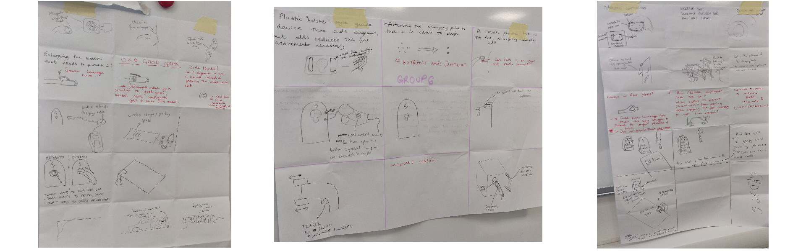
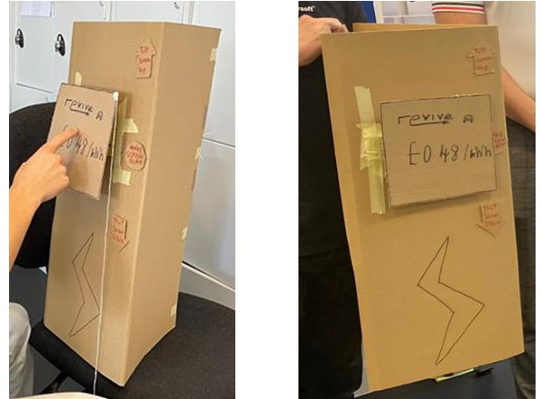
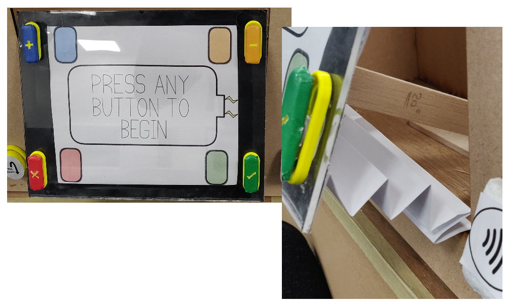

Human Centred Design
The Human Centred Design project was my first during my third year of university after moving over to the Integrated Design Engineering course. The aim of the project was to:
Create a design that made EV charging more accessible.
We were guided in the ideation process using brainstorming, How Might We questions and 365 ideation. This led us to 3 potential candidates for how we can make EV charging easier. We decided that it would be best to choose the tilting screen as it benefits the widest range of people catering to all EV charging users.

Upon reflection I believe that we fixated on one idea far too quickly and we should have explored other potential options or at least played around with the idea of changing how the chosen one would work. I was tasked with creating our first prototype based solely around the tilting mechanism so we would be able to interact with it and get our user to try it out.
After interviewing our user and getting their hands-on experience with our prototype we decided that there was a list of additions and changes that needed to be made. We included buttons to the frame of the screen instead of a touchscreen for a more tactile feeling as well as adding a handle to the side after an expert in the field gave us an insight that often users hands are full when approaching the charging station. The handle allows them to offload their cable while operating the screen. This gave me everything I needed to start on our final prototype shown below which I was again tasked with building.

After completing our final prototype and showing it to experts it was decided that a few further changes could be made to make the design more impactful. Firstly, including some form of weather protection would be important as EV charging stations are often outside and without cover. Secondly, as we were changing the screen anyway it might be worth overhauling the UI to function solely using the buttons around the side to make the whole process easier.
This left us with a final design which we then needed to present to a marking team alongside the design journey we had been along to get to that point. This can be shown on the boards that were situated at the back of our presentation.